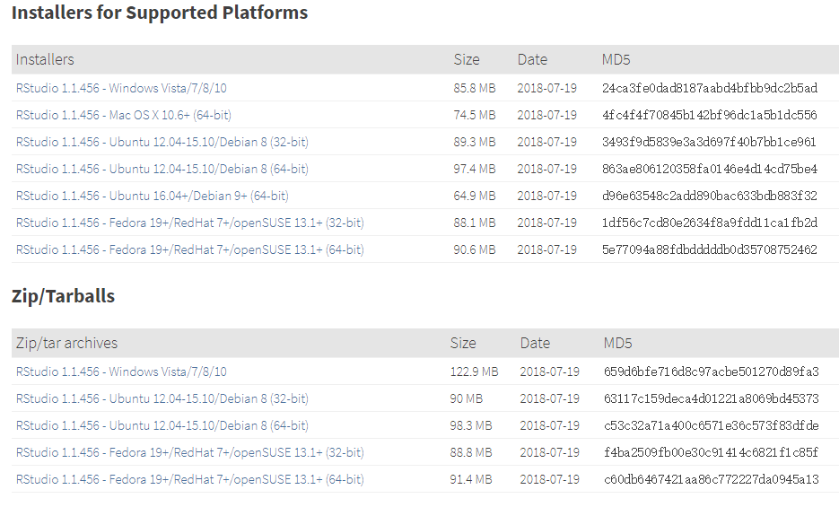
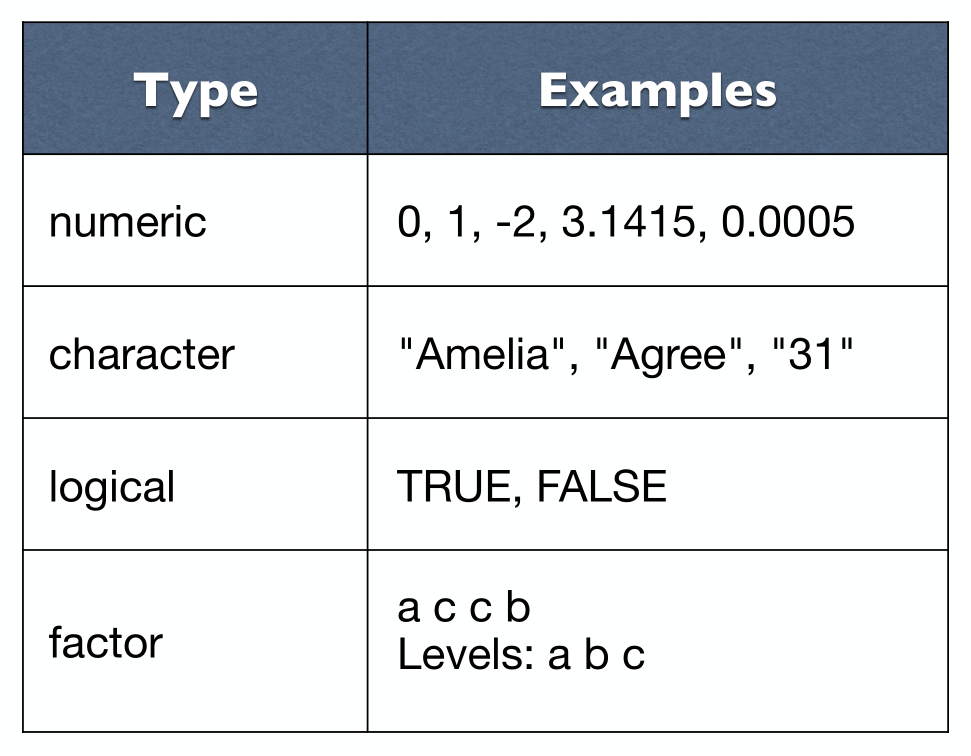
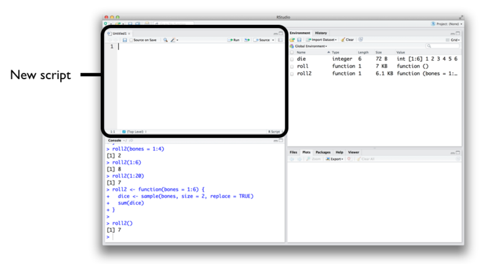
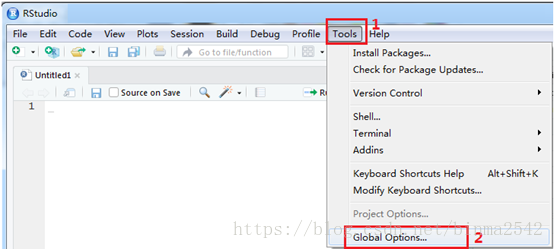
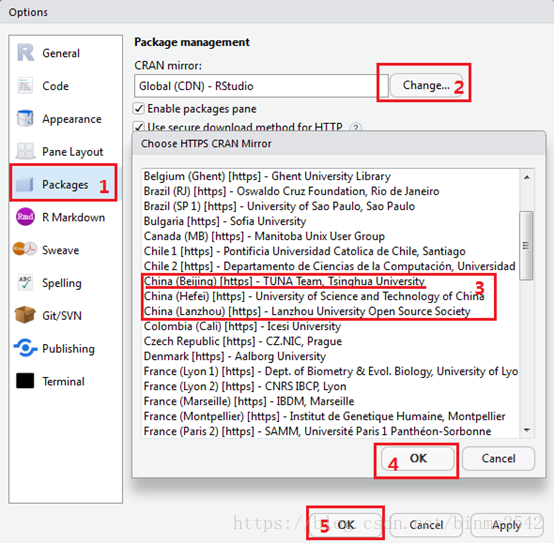
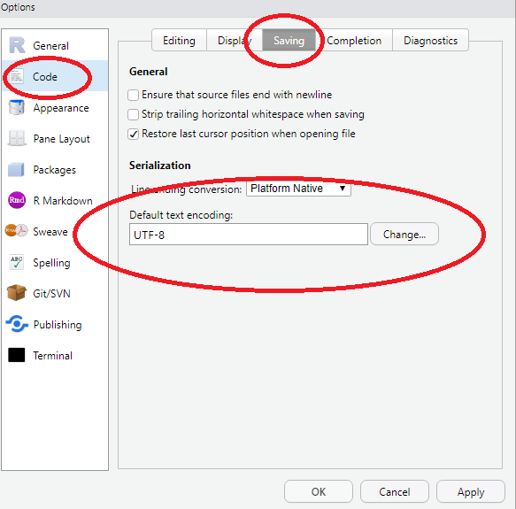
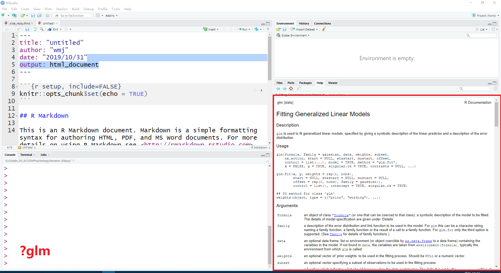

第 2 章 R语言基础
R 软件是一个自由、开源软件平台，具有统计分析、可视化和编程的强大功能。 你可以从这里免费下载。 为了更好的使用 R 软件，我推荐大家使用 RStudio这个 IDE。这里有个在线教程帮助我们熟悉 R 和 RStudio。
2.2 安装 RStudio
安装完R， 还需要安装RStudio。有同学可能要问 R 与 RStudio 是什么关系呢？打个比方吧，R 就像汽车的发动机, RStudio 就是汽车的仪表盘。


同样，我们从官方网站下载并安装，苹果系统的用户，选择苹果系统对应的rstudio版本即可。
- https://www.rstudio.com/download
- 选择
RStudio Desktop

这里有个小小的提示：
- 电脑不要用中文用户名，否则Rstudio会杠上中文用户名
- 尽量安装在非系统盘，比如，可以选择安装在D盘
-
安装路径不要有中文和空格。比如，这样就比较好
-
D:/R -
D:/Rstudio
-
2.3 开始
安装完毕后，从windos开始菜单，点开rstudio图标，就打开了rstudio的窗口，界面效果如下

RStudio 的用户界面十分友好，想要运行一段R代码，只需要在 RStudio 控制台面板最下面一行内键入R 代码，然后回车即可。比如我们键入1 + 1 并按回车后，RStudio 将显示如下结果
## [1] 2## [1] 2.079## [1] 1 2 3 4 5 6 7 8 9 10 11 12 13 14 152.4 对象
在R中存储的数据称为对象， R语言数据处理实际上就是不断的创建和操控这些对象。创建一个R对象，首先确定一个名称，然后使用
赋值操作符 <-，将数据赋值给它。比如，如果想给变量 x 赋值为5，在命令行中可以这样写 x <- 5 ，然后回车.
当键入x 然后回车，就打印出 x 的值。当然也可以使用命令print(x)，结果一样。
## [1] 5## [1] 7## [1] 1 2 3 4 5 6## [1] 0.5 1.0 1.5 2.0 2.5 3.0## [1] 1 4 9 16 25 36## [,1]
## [1,] 91## [,1] [,2] [,3] [,4] [,5] [,6]
## [1,] 1 2 3 4 5 6
## [2,] 2 4 6 8 10 12
## [3,] 3 6 9 12 15 18
## [4,] 4 8 12 16 20 24
## [5,] 5 10 15 20 25 30
## [6,] 6 12 18 24 30 362.5 数据类型

- 数值型
## [1] 3## [1] 5000## [1] 3e+06## [1] "numeric"- 字符串型
## [1] "hello"## [1] "girl"## [1] "1"## [1] "character"- 逻辑型
## [1] TRUE## [1] FALSE## [1] TRUE## [1] "logical"## [1] TRUE- 因子型
## [1] a b c
## Levels: a b c## [1] "factor"2.6 数据结构
- 大家前面看到
x <- 1和x <- c(1, 2, 3)，这就是最简单的数据对象，叫原子型向量。 - 用
c函数将一组数据构造成向量
## [1] 2 4 3 1 5 7长度为 1 的原子型向量
强制转换
## [1] "character"- 大家看到前面
die %o% die是矩阵类型，矩阵就是二维数组 - 可以用
matrix函数创建
## [,1] [,2] [,3]
## [1,] 2 4 3
## [2,] 1 5 7- 数据对象：数组
array函数生成n维数组
## , , 1
##
## [,1] [,2]
## [1,] 11 13
## [2,] 12 14
##
## , , 2
##
## [,1] [,2]
## [1,] 21 23
## [2,] 22 24
##
## , , 3
##
## [,1] [,2]
## [1,] 31 33
## [2,] 32 34- 数据对象：列表
- 与
c函数创建向量的方式相似，不同的元素用逗号分开。不同的是，列表允许不同的数据类型（数值型，字符型，逻辑型等）， 而向量要求每个元素的数据类型必须相同。
## [[1]]
## [1] 100 101 102 103 104 105 106 107 108 109 110
##
## [[2]]
## [1] "R"
##
## [[3]]
## [1] 2 4 3 1 5 7- 数据对象：数据框
data.frame函数构建
df <- data.frame(
name = c("ace", "bob", "carl", "kaite"),
age = c(21, 14, 13, 15),
sex = c("girl", "boy", "boy", "girl")
)
dfR 对象的数据结构(向量、矩阵、数组、列表和数据框)，总结如下

为了更好地理解相关概念，建议大家阅读Garrett Grolemund的 hopr这本书 (Grolemund 2014)。
2.7 函数
R 语言的强大在于使用函数操控各种对象，你可以把对象看作是名词，而函数看作是动词。
我们用一个简单的例子，sum()来演示函数如何工作的。这个函数的功能正如它的名字一样，对输入的各个对象求和，然后返回求和后的值，你可以在命令行中键入?sum()查看其官方文档。
sum()后的结果可以直接显示出来，也可以赋名。比如下面代码，首先计算x + 10并赋以名字y， 然后第二行中打印出来这个新创建的对象y
## [1] 11因为代码的灵活性，可以不断地重新定义对象。只要数据发生改变，原来的代码就会返回新的值。比如，对x重新赋值为 15， 同样运行sum()函数，这次我们不赋值给对象y，而是让它直接显示
## [1] 25再比如
## [1] 3## [1] 3.5## [1] 5050## mpg cyl disp hp
## mpg 1.0000 -0.8522 -0.8476 -0.7762
## cyl -0.8522 1.0000 0.9020 0.8324
## disp -0.8476 0.9020 1.0000 0.7909
## hp -0.7762 0.8324 0.7909 1.00002.8 脚本
如果我们已经写好了一段R程序，我们可以保存为脚本文件，脚本文件通常以.R作为文件的后缀名。比如我们可以将刚才创建x和 y对象的命令，保存为脚本文件my_script.R。
这样我们可以在其它时间修改和重新运行它。
在RStudio中，你可以通过菜单栏依此点击File > New File > R Script 来创建一个新的脚本。
强烈建议大家在运行代码之前，使用脚本的形式编写和编辑自己的程序，养成这样的习惯后，你今后所有的工作都有案可查，并且具有可重复性。

- 点击
Run或者Source运行脚本

2.9 宏包
R 语言的强大还在于各种宏包，一般在The Comprehensive R Archive Network (CRAN)下载安装。宏包扩展了R语言本身的各种功能，也为解决问题提供了各种方案。截至撰写本书时止，CRAN上大约有1.4万个宏包可以使用。但由于各种包接口不统一，语法不一致，也带来一些困扰。为了解决这个问题，RStudio 公司的Hadley Wickham 与其带领的团队推出了tidyverse宏包， tidyverse将常用的宏包整合在一起，并保持了语法的一致性。可以说，tidyverse宏包是R语言入门 学习的首选。
本书正是基于tidyverse宏包而成的，本书也将通过一些例子不断地展示tidyverse在数据分析和可视化的应用。
可以用如下命令安装 ggplot2 宏包:
如果下载速度太慢，可以选择国内镜像 
如果安装宏包过程中出错，可以试试这样
install.packages("tidyverse", repos = "http://cran.rstudio.com")
# 或者
install.packages("tidyverse", repos = "https://CRAN.R-project.org")如果遇到如下报错信息
Warning in install.packages :
unable to access index for repository http://cran.rstudio.com/src/contrib:
cannot open URL 'http://cran.rstudio.com/src/contrib/PACKAGES'输入下面命令后，再试试
或者打开D:\R\etc\Rprofile.site，添加以下内容：
local({r <- getOption("repos")
r["CRAN"] <- "http://mirrors.tuna.tsinghua.edu.cn/CRAN"
options(repos=r)})
options(download.file.method="libcurl")如果打开代码是乱码，可以试试修改如下设置

2.10 如何获取帮助
- 记住和学习所有的函数几乎是不可能的
- 打开函数的帮助页面(
Rstudio右下面板的Help选项卡)
比如：

2.11 R 语言社区
R 语言社区非常友好，可以在这里找到你问题的答案
- twitter: https://twitter.com/
- R-Bloggers: https://www.r-bloggers.com/
- kaggle: https://www.kaggle.com/
- stackoverflow: https://stackoverflow.com/questions/tagged/r
- rstudio: https://community.rstudio.com/
2.12 延伸阅读
- 如何获取向量
a <- c("a", "c", "e")的第二个元素？矩阵和列表的时候，又该如何? - 试试
c(1, FALSE)与c("a", TRUE)会是什么？ 1 == "1"和-1 < FALSE为什么为真？"one" < 2为什么为假？- R语言里可以构造哪些数据对象？
- 数据框可以装载哪些数据类型的数据？
- 数据框和列表区别在哪里？
- ()与[]区别？
参考文献
Grolemund, Garrett. 2014. Hands-on Programming with R. 1 edition. Houston: O’Reilly Media. https://rstudio-education.github.io/hopr/.